0 of 475 units visited · 9 regions
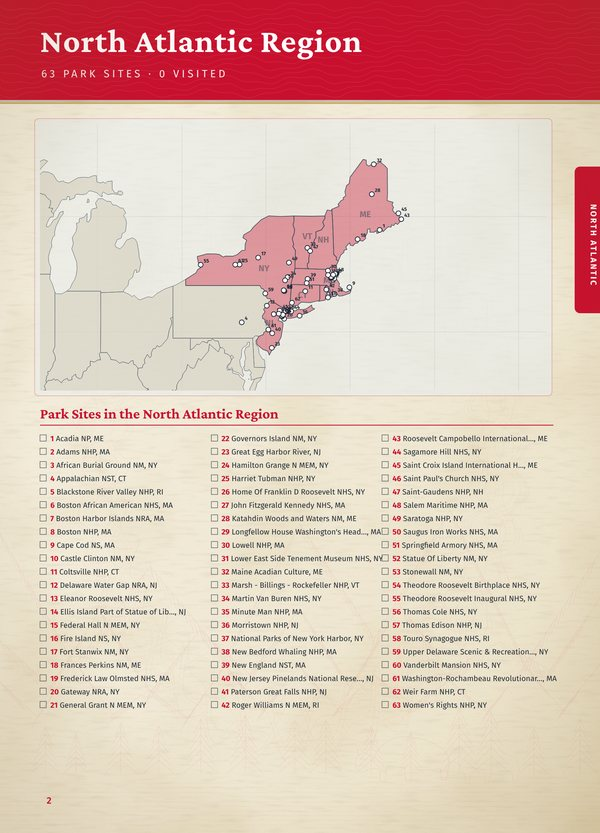
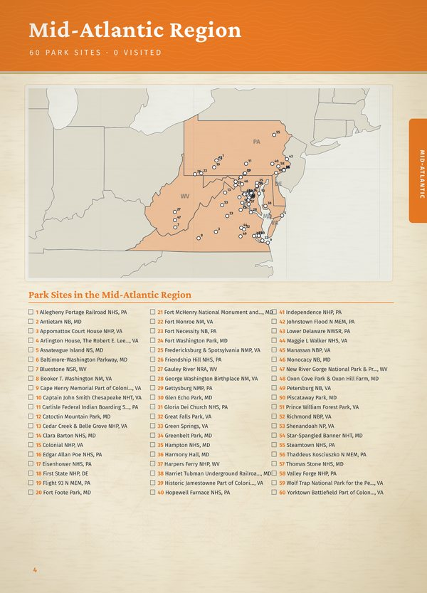
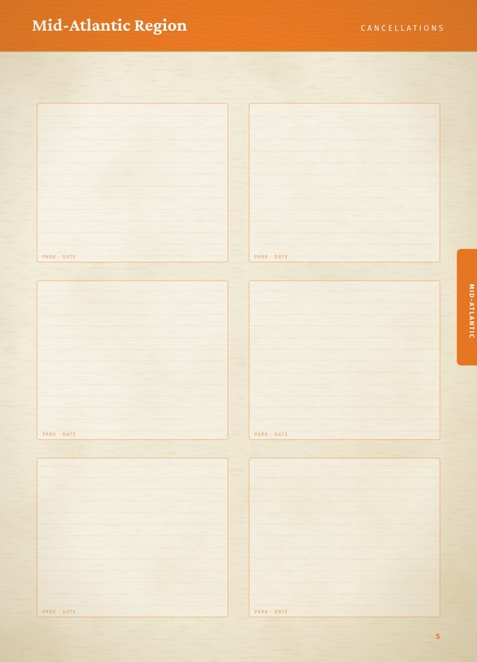
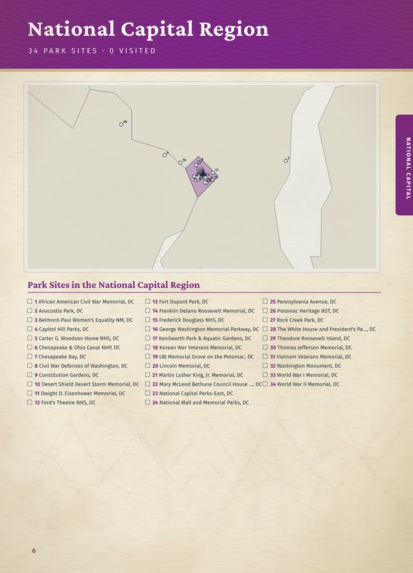
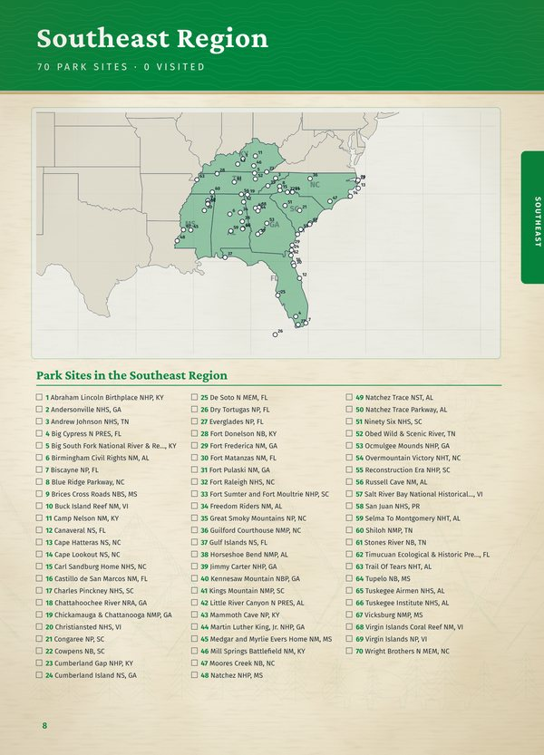
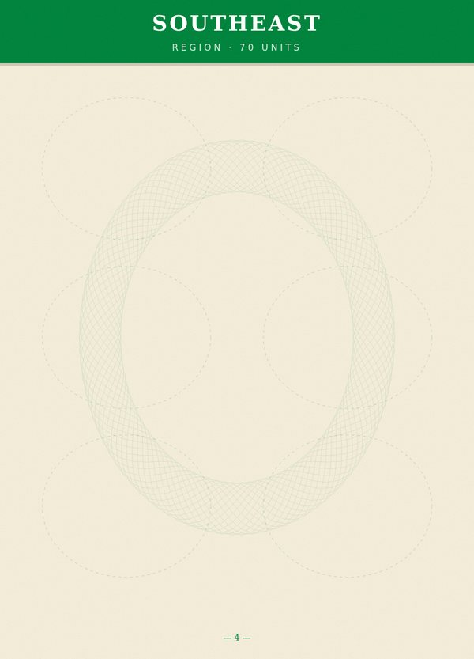
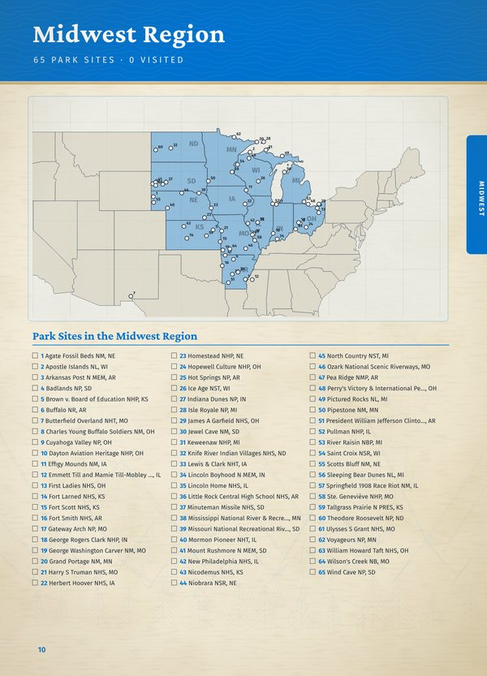
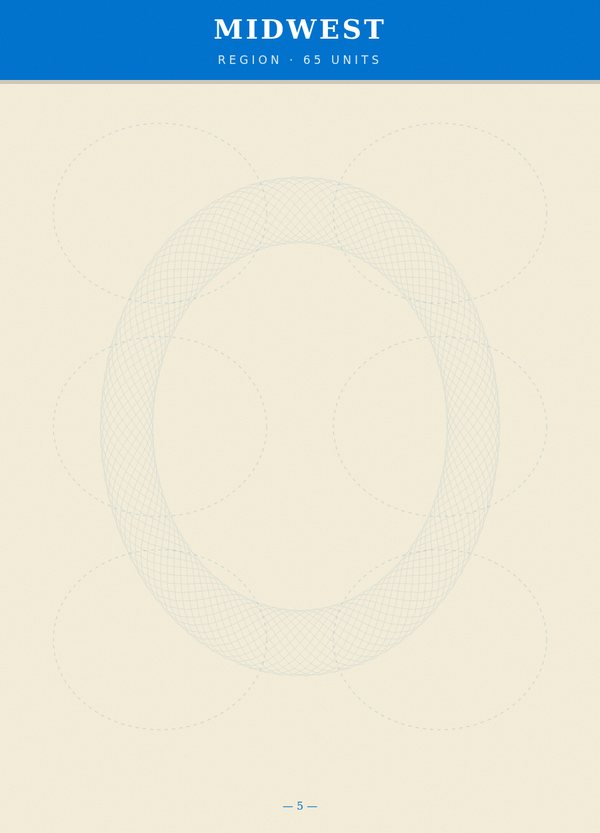
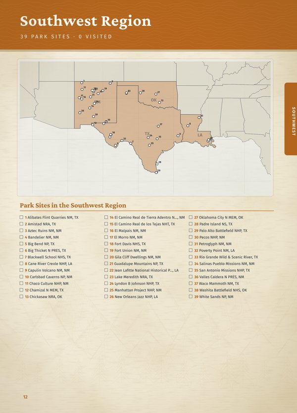
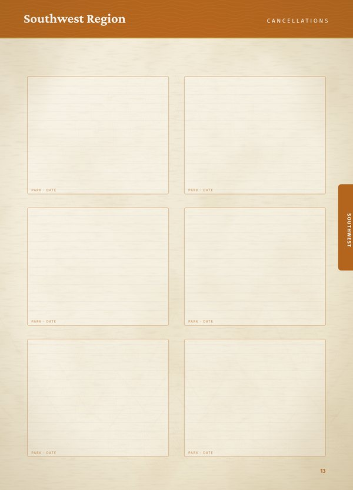
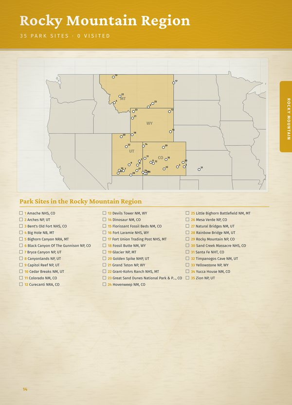
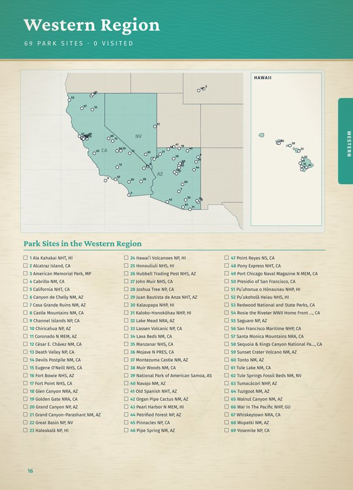
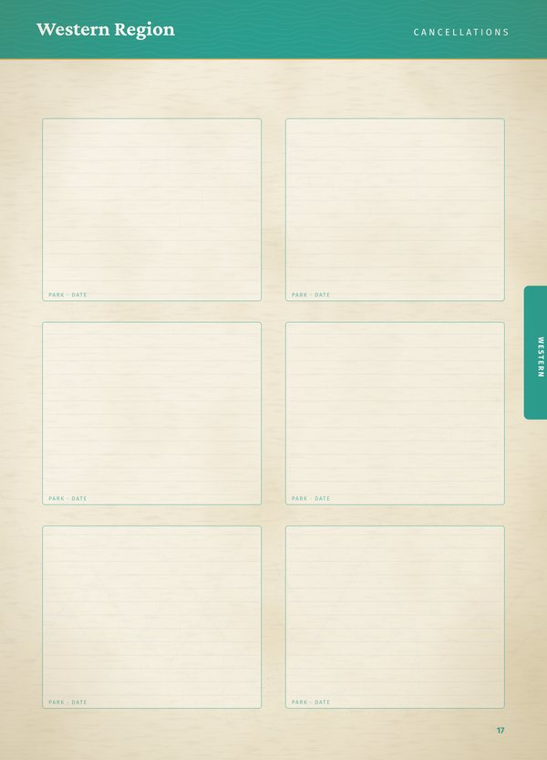
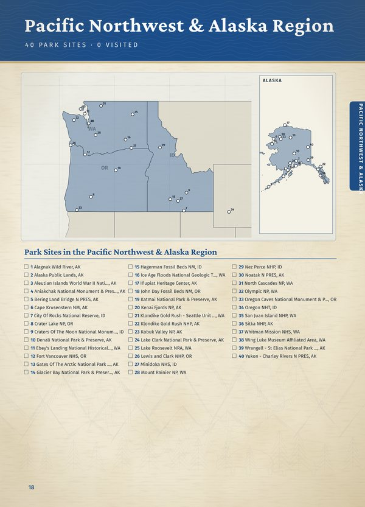
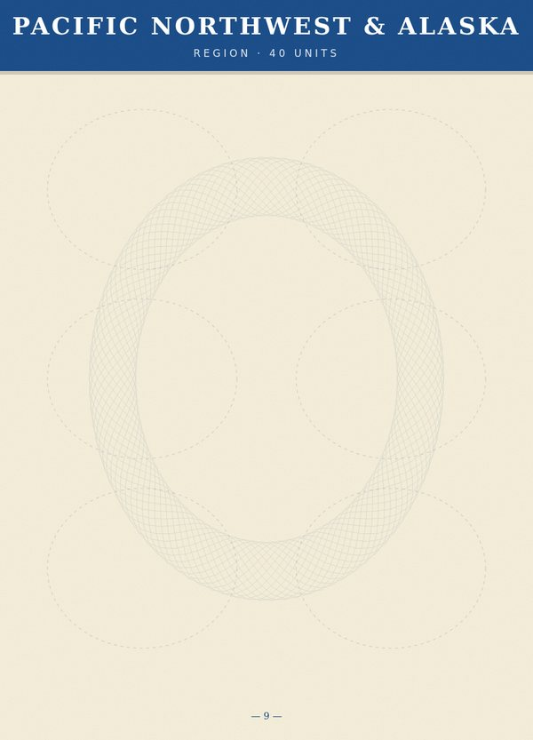
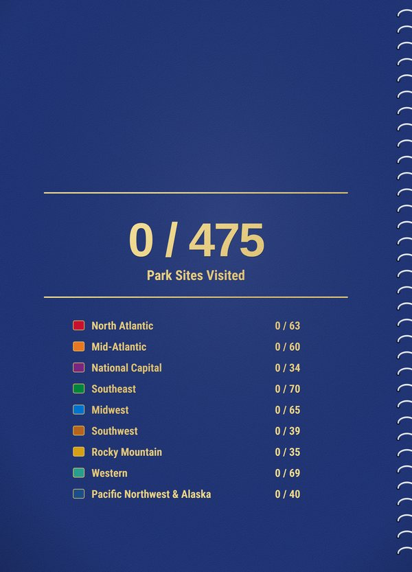
0 of 475 units visited
| North Atlantic | 0 / 63 |
| Mid-Atlantic | 0 / 60 |
| National Capital | 0 / 34 |
| Southeast | 0 / 70 |
| Midwest | 0 / 65 |
| Southwest | 0 / 39 |
| Rocky Mountain | 0 / 35 |
| Western | 0 / 69 |
| Pacific Northwest & Alaska | 0 / 40 |
| No cancellations yet. |